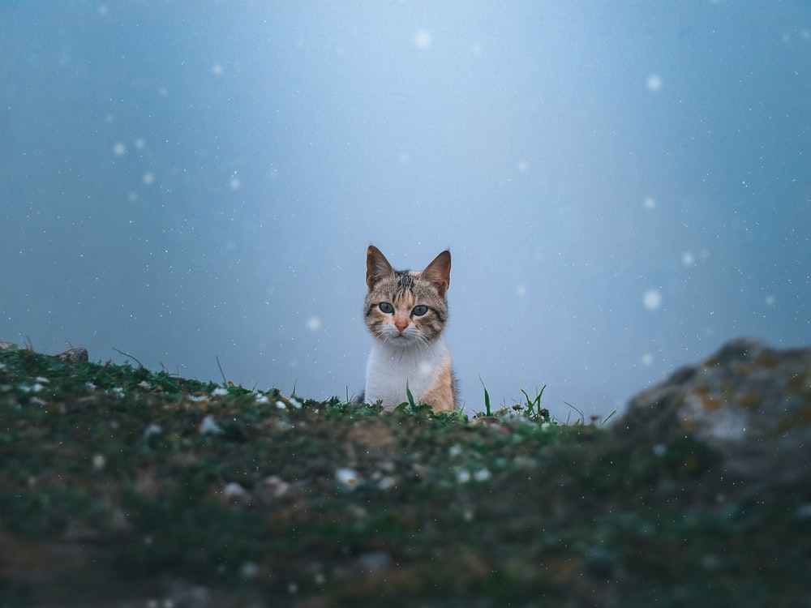
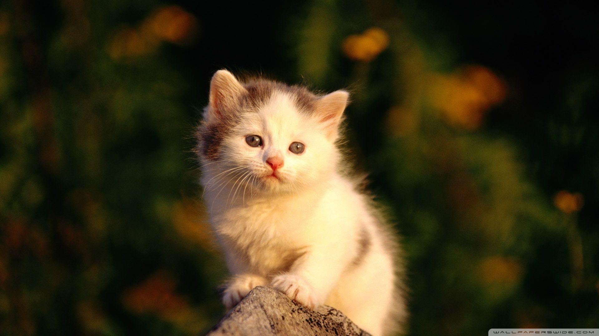

If any outdoor cat comes to you without a collar on and is not scared of you, its probably a stray cat. Cats that are strays are socialized cats that have been around
a human at some point in their life. But has been left or lost their home and wonder the streets. Stray cats do have a difficult part of adjusting to the outdoor, and we can help
them in a few ways. We can regularly feed them each day, this can just be dry food of any sort that you can budget. We can provide a type of home for them to feel safe in. We can
provide vaccinations and neuter. Stray cats are most likely to become indoor cats again if provided the needs and friendliness by us.
Feral Cats

If any outdoor cat hisses or runs away from you, then this would be a feral cat. Feral cats are most likely born outdoors and rarely experience interaction with any
person around. They show aggression and dont back down from a territory they believe is theirs. They can be very difficult to socialize so its best to have them TNR
and to vaccinate them as soon as possible. We can provide the same foods, shelters and water that we would give a stray cat. We can also socialize them slowly to become an indoor cat.
They might not be as friendly towards strangers or to their owners but will show the love that they are thankful for giving them a chance.
Housing

Shelters for outdoor cats do range from purchasing or building one. The best way to create many shelters to your liking would be to build one. Building a cat house is not expensive
and can help them during the cold winters. You would only need two containers, one smaller then the other, and to cut a hole at the same spot for both. Insulation would be put in-between
the two containers and hay in the small container where they will live. Make sure to tape those sharp edges so that no cat gets hurt. This would be a simple house and they will
stay warm during cold times. Depending on the shelter size, more then one cat can live in a shelter. However, sometimes we dont have the time to build one but there are many
pre-built shelters that can be purchased and are very reliable.